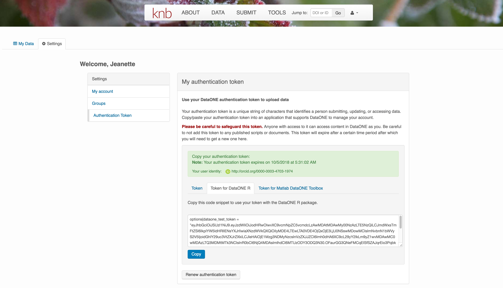

10 Data Documentation and Publishing
10.1 Learning Objectives
In this lesson, you will learn:
- About open data archives
- What science metadata is and how it can be used
- How data and code can be documented and published in open data archives
10.2 Data sharing and preservation

10.3 Data repositories: built for data (and code)
- GitHub is not an archival location
- Dedicated data repositories: KNB, Arctic Data Center, Zenodo, FigShare
- Rich metadata
- Archival in their mission
- Data papers, e.g., Scientific Data
- List of data repositories: http://re3data.org

10.4 Metadata
Metadata are documentation describing the content, context, and structure of data to enable future interpretation and reuse of the data. Generally, metadata describe who collected the data, what data were collected, when and where it was collected, and why it was collected.
For consistency, metadata are typically structured following metadata content standards such as the Ecological Metadata Language (EML). For example, here’s an excerpt of the metadata for a sockeye salmon data set:
<?xml version="1.0" encoding="UTF-8"?>
<eml:eml packageId="df35d.442.6" system="knb"
xmlns:eml="eml://ecoinformatics.org/eml-2.1.1">
<dataset>
<title>Improving Preseason Forecasts of Sockeye Salmon Runs through
Salmon Smolt Monitoring in Kenai River, Alaska: 2005 - 2007</title>
<creator id="1385594069457">
<individualName>
<givenName>Mark</givenName>
<surName>Willette</surName>
</individualName>
<organizationName>Alaska Department of Fish and Game</organizationName>
<positionName>Fishery Biologist</positionName>
<address>
<city>Soldotna</city>
<administrativeArea>Alaska</administrativeArea>
<country>USA</country>
</address>
<phone phonetype="voice">(907)260-2911</phone>
<electronicMailAddress>mark.willette@alaska.gov</electronicMailAddress>
</creator>
...
</dataset>
</eml:eml>That same metadata document can be converted to HTML format and displayed in a much more readable form on the web: https://knb.ecoinformatics.org/#view/doi:10.5063/F1F18WN4
 And as you can see, the whole data set or its components can be downloaded and reused.
And as you can see, the whole data set or its components can be downloaded and reused.
Also note that the repository tracks how many times each file has been downloaded, which gives great feedback to researchers on the activity for their published data.
10.5 Structure of a data package
Note that the data set above lists a collection of files that are contained within the data set. We define a data package as a scientifically useful collection of data and metadata that a researcher wants to preserve. Sometimes a data package represents all of the data from a particular experiment, while at other times it might be all of the data from a grant, or on a topic, or associated with a paper. Whatever the extent, we define a data package as having one or more data files, software files, and other scientific products such as graphs and images, all tied together with a descriptive metadata document.
 These data repositories all assign a unique identifier to every version of every data file, similarly to how it works with source code commits in GitHub. Those identifiers usually take one of two forms. A DOI identifier is often assigned to the metadata and becomes the publicly citable identifier for the package. Each of the other files gets an internal identifier, often a UUID that is globally unique. In the example above, the package can be cited with the DOI
These data repositories all assign a unique identifier to every version of every data file, similarly to how it works with source code commits in GitHub. Those identifiers usually take one of two forms. A DOI identifier is often assigned to the metadata and becomes the publicly citable identifier for the package. Each of the other files gets an internal identifier, often a UUID that is globally unique. In the example above, the package can be cited with the DOI doi:10.5063/F1F18WN4.
10.6 DataONE Federation
DataONE is a federation of dozens of data repositories that work together to make their systems interoperable and to provide a single unified search system that spans the repositories. DataONE aims to make it simpler for researchers to publish data to one of its member repositories, and then to discover and download that data for reuse in synthetic analyses.
DataONE can be searched on the web (https://search.dataone.org/), which effectively allows a single search to find data form the dozens of members of DataONE, rather than visiting each of the currently 43 repositories one at a time.

10.7 Publishing data from the web
Each data repository tends to have its own mechanism for submitting data and providing metadata. With repositories like the KNB Data Repository and the Arctic Data Center, we provide some easy to use web forms for editing and submitting a data package. Let’s walk through a web submission to see what you might expect.
10.7.1 Download the data to be used for the tutorial
I’ve already uploaded the test data package, and so you can access the data here:
Grab both CSV files, and the R script, and store them in a convenient folder.
10.7.2 Login via ORCID
We will walk through web submission on https://dev.nceas.ucsb.edu, and start by logging in with an ORCID account. ORCID provides a common account for sharing scholarly data, so if you don’t have one, you can create one when you are redirected to ORCID from the Sign In button.

When you sign in, you will be redirected to orcid.org, where you can either provide your existing ORCID credentials, or create a new account. ORCID provides multiple ways to login, including using your email address, institutional logins from many universities, and logins from social media account providers. Choose the one that is best suited to your use as a scholarly record, such as your university or agency login.

10.7.3 Create and submit the data set
After signing in, you can access the data submission form using the Submit button. Once on the form, upload your data files and follow the prompts to provide the required metadata. Required sections are listed with a red asterisk.
10.7.3.1 Click Add Files to choose the data files for your package
You can select multiple files at a time to efficiently upload many files.

The files will upload showing a progress indicator. You can continue editing metadata while they upload.
10.7.3.2 Enter Overview information
This includes a descriptive title, abstract, and keywords.
The title is the first way a potential user will get information about your dataset. It should be descriptive but succinct, lack acronyms, and include some indication of the temporal and geospatial coverage of the data.
The abstract should be sufficently descriptive for a general scientific audience to understand your dataset at a high level. It should provide an overview of the scientific context/project/hypotheses, how this data package fits into the larger context, a synopsis of the experimental or sampling design, and a summary of the data contents.

Keywords, while not required, can help increase the searchability of your dataset, particularly if they come from a semantically defined keyword thesaurus.

Optionally, you can also enter funding information, including a funding number, which can help link multiple datasets collected under the same grant.
Selecting a distribution license - either CC-0 or CC-BY is required.

10.7.3.3 People Information
Information about the people associated with the dataset is essential to provide credit through citation and to help people understand who made contributions to the product. Enter information for the following people:
- Creators - all the people who should be in the citation for the dataset
- Contacts - one is required, but defaults to the first Creator if omitted
- Principal Investigators
- and any other that are relevant
For each, please strive to provide their ORCID identifier, which helps link this dataset to their other scholarly works.

10.7.3.4 Temporal Information
Add the temporal coverage of the data, which represents the time period to which data apply. The editor allows entering multiple sampling periods if sampling was discontiguous. This is especially helpful if sampling was discontigous over long time periods.

10.7.3.5 Location Information
The geospatial location that the data were collected is critical for discovery and interpretation of the data. Coordinates are entered in decimal degrees, and be sure to use negative values for West longitudes. The editor allows you to enter multiple locations, which you should do if you had noncontiguous sampling locations. This is particularly important if your sites are separated by large distances, so that a spatial search will be more precise.

Note that, if you miss fields that are required, they will be highlighted in red to draw your attention. In this case, for the description, provide a comma-separated place name, ordered from the local to global. For example:
- Mission Canyon, Santa Barbara, California, USA
10.7.3.6 Methods
Methods are critical to accurate interpretation and reuse of your data. The editor allows you to add multiple different methods sections, include details of sampling methods, experimental design, quality assurance procedures, and computational techniques and software. Please be complete with your methods sections, as they are fundamentally important to reuse of the data.
10.7.3.7 Save a first version with Submit
When finished, click the Submit Dataset button at the bottom.
If there are errors or missing fields, they will be highlighted.
Correct those, and then try submitting again. When you are successful, you should see a green banner with a link to the current dataset view. Click the X to close that banner, if you want to continue editing metadata.

Success!
10.7.4 File and variable level metadata
The final major section of metadata concerns the structure and contents of your data files. In this case, provide the names and descriptions of the data contained in each file, as well as details of their internal structure.
For example, for data tables, you’ll need the name, label, and definition of each variable in your file. Click the Describe button to access a dialog to enter this information.
The Attributes tab is where you enter variable (aka attribute) information. In the case of tabular data (such as csv files) each column is an attribute, thus there should be one attribute defined for every column in your dataset. Attribute metadata includes:
- variable name (for programs)
- variable label (for display)

- variable definition (be specific)
- type of measurement

- units & code definitions

You’ll need to add these definitions for every variable (column) in the file. When done, click Done.

Now the list of data files will show a green checkbox indicating that you have full described that file’s internal structure. Proceed with the other CSV files, and then click Submit Dataset to save all of these changes.
Note that attribute information is not relevant for data files that do not contain variables, such as the R script in this example. Other examples of data files that might not need attributes are images, pdfs, and non-tabular text documents (such as readme files). The yellow circle in the editor indicates that attributes have not been filled out for a data file, and serves as a warning that they might be needed, depending on the file.
After you get the green success message, you can visit your dataset and review all of the information that you provided. If you find any errors, simply click Edit again to make changes.
10.7.5 Add workflow provenance
Understanding the relationships between files in a package is critically important, especially as the number of files grows. Raw data are transformed and integrated to produce derived data, that are often then used in analysis and visualization code to produce final outputs. In DataONE, we support structured descriptions of these relationships, so one can see the flow of data from raw data to derived to outputs.
You add provenance by navigating to the data table descriptions, and selecting the Add buttons to link the data and scripts that were used in your computational workflow. On the left side, select the Add circle to add an input data source to the filteredSpecies.csv file. This starts building the provenance graph to explain the origin and history of each data object.
The linkage to the source dataset should appear.

Then you can add the link to the source code that handled the conversion between the data files by clicking on Add arrow and selecting the R script:

Select the R script and click “Done.”

The diagram now shows the relationships among the data files and the R script, so click Submit to save another version of the package.

Et voilà! A beatifully preserved data package!
10.8 Publishing data from R
Now lets see how to use the dataone and datapack R packages to upload data to DataONE member repositories like the KNB Data Repository and the Arctic Data Center.
The dataone R package provides methods to enable R scripts to interact with DataONE to search for, download, upload and update data and metadata. The purpose of uploading data from R is to automate the repetitive tasks for large data sets with many files. For small data sets, the web submission for will certainly be simpler.
The dataone R package represents the set of files in a data set as a datapack::DataPackage. We will create a DataPackage locally, and then upload it to a test version of the Arctic Data Center repository using dataone.
10.8.1 Logging in
Before uploading any data to a DataONE repository, you must login to get an authentication token, which is a character string used to identify yourself. This token can be retrieved by logging into the test repository and copying the token into your R session.
10.8.2 Obtain an ORCID
ORCID is a researcher identifier that provides a common way to link your researcher identity to your articles and data. An ORCID is to a researcher as a DOI is to a research article. To obtain an ORCID, register at https://orcid.org.
10.8.3 Log in to the test repository and copy your token
We will be using a test server, so login and retrieve your token at https://dev.nceas.ucsb.edu
Once you are logged in, navigate to your Profile Settings, and locate the “Authentication Token” section, and then copy the token for R to your clipboard.
 Finally, paste the token into the R Console to register it as an option for this R session. You are now logged in. But note that you need to keep this token private; don’t paste it into scripts or check it into Git, as it is just as sensitive as your password.
10.8.4 Modifying metadata
Next, modify the metadata file associated with the package to set yourself as the owner. This will help us differentiate the test data later. Open the strix-pacific-northwest.xml file in RStudio, and change the givenName and surName fields at the top to your name.
library(EML)
source("misc/eml_helpers.R")
# Load the EML file into R
emlFile <- "data/strix/strix-pacific-northwest.xml"
doc <- read_eml(emlFile)
# Change creator to us
doc@dataset@creator <- c(eml_creator("Matthew", "Jones", email = "jones@nceas.ucsb.edu"))
# Change abstract to the better one we wrote
doc@dataset@abstract <- as(set_TextType("data/strix/better-abstract.md"), "abstract")
# Save it back to the filesystem
write_eml(doc, emlFile)10.8.5 Uploading A Package Using R with uploadDataPackage
Datasets and metadata can be uploaded individually or as a collection. Such a collection, whether contained in local R objects or existing on a DataONE repository, will be informally referred to as a package. The steps necessary to prepare and upload a package to DataONE using the uploadDataPackage method will be shown. A complete script that uses these steps is shown here.
In the first section, we create a ’DataPackage as a container for our data, metadata, and scripts. It starts out as empty.
library(dataone)
library(datapack)
library(uuid)
d1c <- D1Client("STAGING2", "urn:node:mnTestKNB")
dp <- new("DataPackage")
show(dp)We then add a metadata file, data file, R script and output data file to this package. Our first order is to generate identifiers for the files that are part of the package, and add EML metadata that references those identifiers.
# Generate identifiers for our data and program objects, and add them to the metadata
sourceId <- paste0("urn:uuid:", uuid::UUIDgenerate())
progId <- paste0("urn:uuid:", uuid::UUIDgenerate())
outputId <- paste0("urn:uuid:", uuid::UUIDgenerate())
doc@dataset@otherEntity[[1]]@id <- new("xml_attribute", sourceId)
doc@dataset@otherEntity[[2]]@id <- new("xml_attribute", progId)
doc@dataset@otherEntity[[3]]@id <- new("xml_attribute", outputId)
repo_obj_service <- paste0(d1c@mn@endpoint, "/object/")
doc@dataset@otherEntity[[1]]@physical[[1]]@distribution[[1]]@online@url <-
new("url", paste0(repo_obj_service, sourceId))
doc@dataset@otherEntity[[2]]@physical[[1]]@distribution[[1]]@online@url <-
new("url", paste0(repo_obj_service, progId))
doc@dataset@otherEntity[[3]]@physical[[1]]@distribution[[1]]@online@url <-
new("url", paste0(repo_obj_service, outputId))
write_eml(doc, emlFile)Now we have a full metadata document ready to be uploaded. In the next section, we’ll add the data files and metadata to a DataPackage, and then upload that to a test repository.
# Add the metadata document to the package
metadataObj <- new("DataObject",
format="eml://ecoinformatics.org/eml-2.1.1",
filename=paste(getwd(), emlFile, sep="/"))
dp <- addMember(dp, metadataObj)
# Add our input data file to the package
sourceData <- "data/strix/sample.csv"
sourceObj <- new("DataObject",
id = sourceId,
format="text/csv",
filename=paste(getwd(), sourceData, sep="/"))
dp <- addMember(dp, sourceObj, metadataObj)
# Add our processing script to the package
progFile <- "data/strix/filterSpecies.R"
progObj <- new("DataObject",
id = progId,
format="application/R",
filename=paste(getwd(), progFile, sep="/"),
mediaType="text/x-rsrc")
dp <- addMember(dp, progObj, metadataObj)
# Add our derived output data file to the package
outputData <- "data/strix/filteredSpecies.csv"
outputObj <- new("DataObject",
id = outputId,
format="text/csv",
filename=paste(getwd(), outputData, sep="/"))
dp <- addMember(dp, outputObj, metadataObj)
myAccessRules <- data.frame(subject="http://orcid.org/0000-0003-0077-4738", permission="changePermission")
# Add the provenance relationships to the data package
dp <- describeWorkflow(dp, sources=sourceObj, program=progObj, derivations=outputObj)
show(dp)Finally, we upload the package to the Testing server for the KNB.
packageId <- uploadDataPackage(d1c, dp, public=TRUE, accessRules=myAccessRules, quiet=FALSE)This particular package contains the R script filterSpecies.R, the input file sample.csv that was read by the script and the output file filteredSpecies.csv that was created by the R script, which was run at a previous time.
You can now search for and view the package at https://dev.nceas.ucsb.edu: 
In addition, each of the uploaded entities shows the relevant provenance information, showing how the source data is linked to the derived data via the R program that was used to process the raw data: